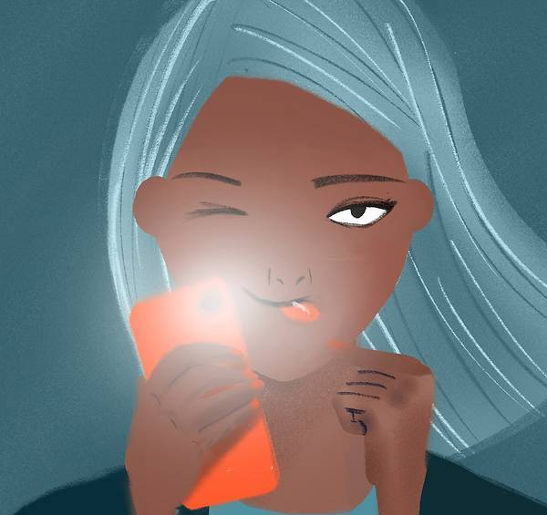
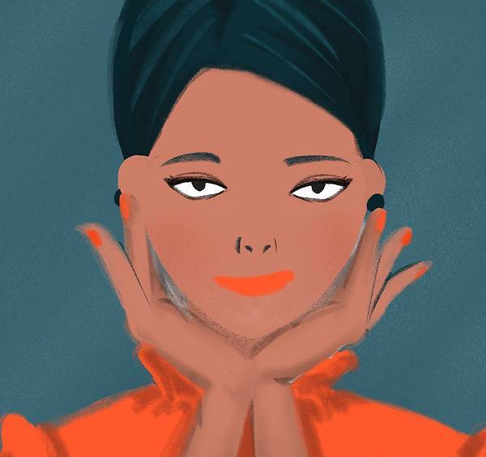

snapchat and instagram filters.
and how we fell for them
how it started
Like most things in technology, things start off innocently. On Snapchat for example, the filters were designed as a creative outlet and a way to make the app more fun for their users. There were only less than 10 filters at the start of all this, including the infamous puppy dog ears and flower crown filter; however, filters now can give a person freckles, longer eyelashes, wider eyes, a smaller jaw, a smaller nose and flawless skin, among other augmentations. Once you have these filters on, you’re ready to hit "post" for the world to see. Cue the likes.
Instagram as a platform is highly dependent on visual content. As a consequence, it is easy to understand how visually appealing content reigns, and bodies and facies are no exception. We’ve entered into the era of “selfie perfection.” But, some experts say, all this social media flawlessness is seeping from our phones and invading our real lives. More people are thinking: I want to look like that — and going to great lengths to get there. As if being judged by how we look wasn’t already tough enough. How did it get to the point where we're now made to feel bad about ourselves even before we even look in the mirror in the morning?
rise of social media "surgery"
The camera on snapchat or instagram shows you what you see in the mirror, but on top of that, filters change the features on your face, it becomes more defined, more enhanced, and ultimately shows a version of you that really… isn’t. These enhancements made from the touch of a button on your phone have also made its way beyond the screens; the filtered-selfie look is now highly in demand. Desires for bigger lips, sharper jawlines, lifted eyes and faces have exploded significantly in recent years.
Plastic surgeons are seeing patients come in, requesting to look like their filtered selves! The world we live in is now digital and as much as “art imitates life”, it seems like the alternative tends to increasingly be proven true. It is crazy that apps such as Instagram and Snapchat are the driving factors to our decisions, mental health and where societal beauty standards are being set. Manipulating our entire bone structure, or removing every pore from our face is resetting a new standard in beauty, and to produce such an unattainable standard, let alone advocate it, really isn’t kind to ourselves.
image art by Jasper Loh
Read More here